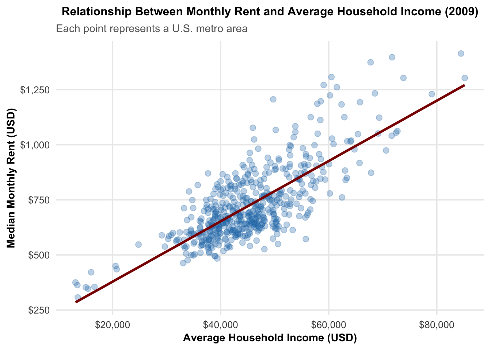
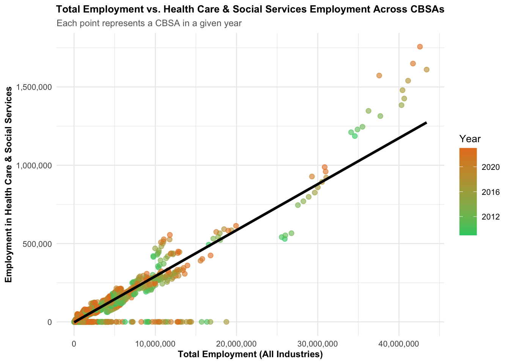
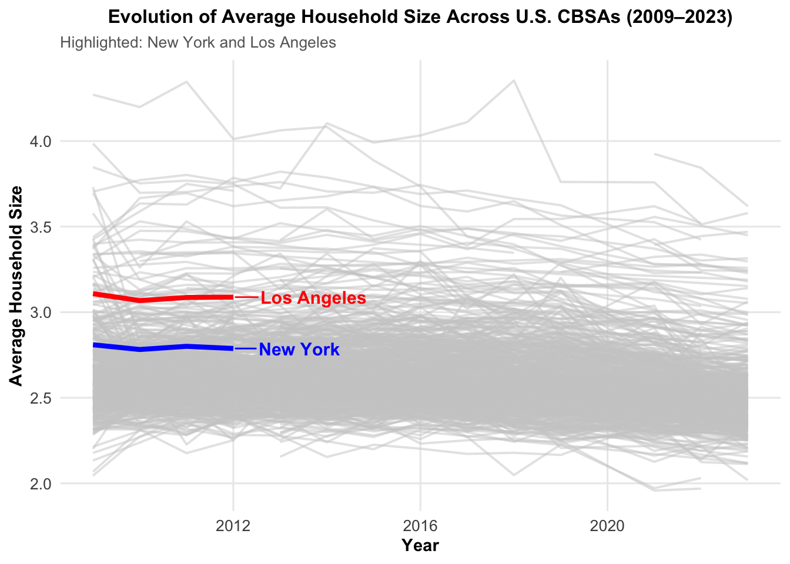
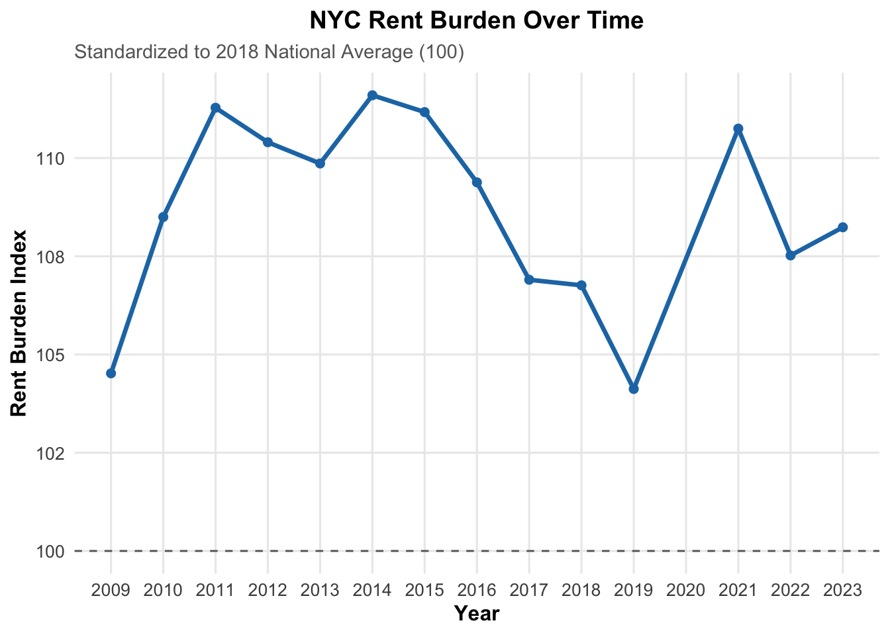
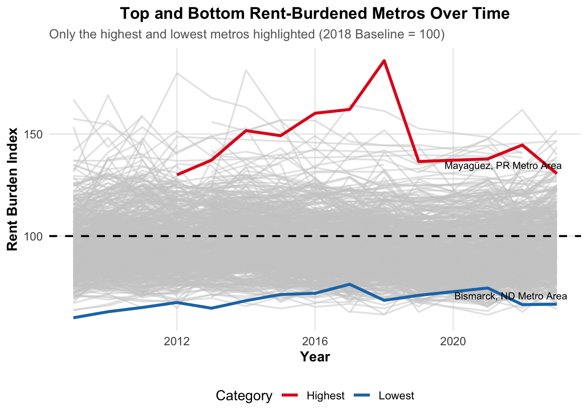

Mini Project 02 - Making Backyards Affordable for All
Author
Juan David Jaimes
Executive Summary
Housing affordability remains a pressing concern across metropolitan America. Drawing on data from the American Community Survey (ACS), the U.S. Census Bureau’s Building Permits Survey, and the Bureau of Labor Statistics (BLS) Quarterly Census of Employment and Wages (QCEW), this analysis develops three complementary indicators:
1. Rent Pressure Index (RPI): Measures the proportion of household income allocated to rent, normalized on a 0–100 scale.
2. Housing Supply Momentum Index (HSMI): Combines housing permits per capita with permitting relative to five-year population change, also standardized 0–100.
3. Millennial Vitality Indicator (MVI): Captures demographic youthfulness and employment in arts, entertainment, and cultural amenities.
Preliminary insights:
Metropolitan areas maintaining steady levels of new permitting typically experience slower growth—or even reductions—in rent pressure.
Regions classified as “pro-housing” or YIMBY-oriented tend to display a favorable combination of declining rent burden, sustained population expansion, and strong permitting activity.
Policy direction: Establish a Federal Pro-Housing Incentive Initiative to direct competitive funding and infrastructure grants toward metro areas exhibiting improved housing affordability, consistent population growth, and ongoing residential development.
Task #1 Data Acquisition
Data were obtained from three primary public sources using R packages including tidycensus, httr2, and rvest. From the American Community Survey (ACS), I extracted information on household income, rent, population, and housing counts for the period 2009–2023 (excluding 2020) at the CBSA level to evaluate housing affordability patterns. The Census Building Permits Survey supplied annual figures on newly authorized housing units, providing insight into local construction activity and development intensity. In addition, the Bureau of Labor Statistics’ Quarterly Census of Employment and Wages (QCEW) contributed data on employment and earnings by industry, linking housing trends to broader economic performance.
Code
if(!dir.exists(file.path("data", "mp02"))){dir.create(file.path("data", "mp02"), showWarnings=FALSE, recursive=TRUE)}library <-function(pkg){## Mask base::library() to automatically install packages if needed## Masking is important here so downlit picks up packages and links## to documentation pkg <-as.character(substitute(pkg))options(repos =c(CRAN ="https://cloud.r-project.org"))if(!require(pkg, character.only=TRUE, quietly=TRUE)) install.packages(pkg)stopifnot(require(pkg, character.only=TRUE, quietly=TRUE))}library(tidyverse)
── Attaching core tidyverse packages ──────────────────────── tidyverse 2.0.0 ──
✔ dplyr 1.1.4 ✔ readr 2.1.5
✔ forcats 1.0.0 ✔ stringr 1.5.1
✔ ggplot2 3.5.2 ✔ tibble 3.3.0
✔ lubridate 1.9.4 ✔ tidyr 1.3.1
✔ purrr 1.1.0
── Conflicts ────────────────────────────────────────── tidyverse_conflicts() ──
✖ dplyr::filter() masks stats::filter()
✖ dplyr::lag() masks stats::lag()
ℹ Use the conflicted package (<http://conflicted.r-lib.org/>) to force all conflicts to become errors
Code
library(glue)library(readxl)library(tidycensus)get_acs_all_years <-function(variable, geography="cbsa",start_year=2009, end_year=2023){ fname <-glue("{variable}_{geography}_{start_year}_{end_year}.csv") fname <-file.path("data", "mp02", fname)if(!file.exists(fname)){ YEARS <-seq(start_year, end_year) YEARS <- YEARS[YEARS !=2020] # Drop 2020 - No survey (covid) ALL_DATA <-map(YEARS, function(yy){ tidycensus::get_acs(geography, variable, year=yy, survey="acs1") |>mutate(year=yy) |>select(-moe, -variable) |>rename(!!variable := estimate) }) |>bind_rows()write_csv(ALL_DATA, fname) }read_csv(fname, show_col_types =FALSE)}# Household income (12 month)INCOME <-get_acs_all_years("B19013_001") |>rename(household_income = B19013_001)# Monthly rentRENT <-get_acs_all_years("B25064_001") |>rename(monthly_rent = B25064_001)# Total populationPOPULATION <-get_acs_all_years("B01003_001") |>rename(population = B01003_001)# Total number of householdsHOUSEHOLDS <-get_acs_all_years("B11001_001") |>rename(households = B11001_001)
Building Permits
This step retrieves and processes data on newly authorized housing units across Core-Based Statistical Areas (CBSAs) from 2009 to 2023, integrating both historical and up-to-date figures from the U.S. Census Bureau’s Building Permits Survey.
This step retrieves, organizes, and stores industry classification information from the Bureau of Labor Statistics (BLS). It specifically targets the extraction of NAICS (North American Industry Classification System) codes along with their corresponding industry titles to categorize economic sectors accurately.
Code
library(httr2)library(rvest)
Attaching package: 'rvest'
The following object is masked from 'package:readr':
guess_encoding
Code
get_bls_industry_codes <-function(){ fname <-file.path("data", "mp02", "bls_industry_codes.csv")library(dplyr)library(tidyr)library(readr)if(!file.exists(fname)){ resp <-request("https://www.bls.gov") |>req_url_path("cew", "classifications", "industry", "industry-titles.htm") |>req_headers(`User-Agent`="Mozilla/5.0 (Macintosh; Intel Mac OS X 10.15; rv:143.0) Gecko/20100101 Firefox/143.0") |>req_error(is_error = \(resp) FALSE) |>req_perform()resp_check_status(resp) naics_table <-resp_body_html(resp) |>html_element("#naics_titles") |>html_table() |>mutate(title =str_trim(str_remove(str_remove(`Industry Title`, Code), "NAICS"))) |>select(-`Industry Title`) |>mutate(depth =if_else(nchar(Code) <=5, nchar(Code) -1, NA)) |>filter(!is.na(depth))# These were looked up manually on bls.gov after finding # they were presented as ranges. Since there are only three# it was easier to manually handle than to special-case everything else naics_missing <- tibble::tribble(~Code, ~title, ~depth, "31", "Manufacturing", 1,"32", "Manufacturing", 1,"33", "Manufacturing", 1,"44", "Retail", 1, "45", "Retail", 1,"48", "Transportation and Warehousing", 1, "49", "Transportation and Warehousing", 1 ) naics_table <-bind_rows(naics_table, naics_missing) naics_table <- naics_table |>filter(depth ==4) |>rename(level4_title=title) |>mutate(level1_code =str_sub(Code, end=2), level2_code =str_sub(Code, end=3), level3_code =str_sub(Code, end=4)) |>left_join(naics_table, join_by(level1_code == Code)) |>rename(level1_title=title) |>left_join(naics_table, join_by(level2_code == Code)) |>rename(level2_title=title) |>left_join(naics_table, join_by(level3_code == Code)) |>rename(level3_title=title) |>select(-starts_with("depth")) |>rename(level4_code = Code) |>select(level1_title, level2_title, level3_title, level4_title, level1_code, level2_code, level3_code, level4_code) |>drop_na() |>mutate(across(contains("code"), as.integer))write_csv(naics_table, fname) }read_csv(fname, show_col_types=FALSE)}INDUSTRY_CODES <-get_bls_industry_codes()
Employment and Wages
This step collects, cleans, and stores data from the Bureau of Labor Statistics (BLS) Quarterly Census of Employment and Wages (QCEW) covering the years 2009–2023, incorporating adjustments to account for data gaps related to the COVID-19 pandemic.
Code
library(httr2)library(rvest)get_bls_qcew_annual_averages <-function(start_year=2009, end_year=2023){ fname <-glue("bls_qcew_{start_year}_{end_year}.csv.gz") fname <-file.path("data", "mp02", fname) YEARS <-seq(start_year, end_year) YEARS <- YEARS[YEARS !=2020] # Drop Covid year to match ACSif(!file.exists(fname)){ ALL_DATA <-map(YEARS, .progress=TRUE, possibly(function(yy){ fname_inner <-file.path("data", "mp02", glue("{yy}_qcew_annual_singlefile.zip"))if(!file.exists(fname_inner)){request("https://www.bls.gov") |>req_url_path("cew", "data", "files", yy, "csv",glue("{yy}_annual_singlefile.zip")) |>req_headers(`User-Agent`="Mozilla/5.0 (Macintosh; Intel Mac OS X 10.15; rv:143.0) Gecko/20100101 Firefox/143.0") |>req_retry(max_tries=5) |>req_perform(fname_inner) }if(file.info(fname_inner)$size <755e5){warning(sQuote(fname_inner), "appears corrupted. Please delete and retry this step.") }read_csv(fname_inner, show_col_types=FALSE) |>mutate(YEAR = yy) |>select(area_fips, industry_code, annual_avg_emplvl, total_annual_wages, YEAR) |>filter(nchar(industry_code) <=5, str_starts(area_fips, "C")) |>filter(str_detect(industry_code, "-", negate=TRUE)) |>mutate(FIPS = area_fips, INDUSTRY =as.integer(industry_code), EMPLOYMENT =as.integer(annual_avg_emplvl), TOTAL_WAGES = total_annual_wages) |>select(-area_fips, -industry_code, -annual_avg_emplvl, -total_annual_wages) |># 10 is a special value: "all industries" , so omitfilter(INDUSTRY !=10) |>mutate(AVG_WAGE = TOTAL_WAGES / EMPLOYMENT) })) |>bind_rows()write_csv(ALL_DATA, fname) } ALL_DATA <-read_csv(fname, show_col_types=FALSE) ALL_DATA_YEARS <-unique(ALL_DATA$YEAR) YEARS_DIFF <-setdiff(YEARS, ALL_DATA_YEARS)if(length(YEARS_DIFF) >0){stop("Download failed for the following years: ", YEARS_DIFF, ". Please delete intermediate files and try again.") } ALL_DATA}WAGES <-get_bls_qcew_annual_averages()
Task #2: Data Cleaning and integration
To maintain consistency across sources, I standardized the GEOID, CBSA, and YEAR fields in all datasets. For the ACS tables (income, rent, population, households), a unified identifier named std_cbsa was created from the GEOID variable, while corresponding keys were generated for the Building Permits and BLS datasets using their respective CBSA or FIPS codes. Once these identifiers were aligned, I merged the datasets through inner joins by year and metropolitan area, removed missing observations, and confirmed that all tables spanned the same temporal range. The resulting harmonized dataset served as the foundation for constructing the indices and visualizations presented in the following section.
Data Integration and Exploration
Question 2.1 :Which CBSA permitted the largest number of new housing units in the decade from 2010 to 2019?
Code
library(dplyr)library(DT)top_housing_metros <- PERMITS %>%filter(year >=2010, year <=2019) %>%group_by(CBSA) %>%summarise(total_units =sum(new_housing_units_permitted, na.rm =TRUE)) %>%left_join(INCOME %>%distinct(GEOID, NAME), by =c("CBSA"="GEOID")) %>%arrange(desc(total_units)) %>%slice(1) %>%ungroup()datatable( top_housing_metros,options =list(searching =FALSE, info =FALSE),caption ='Top Metropolitan Area by New Housing Units Permitted (2010-2019)',colnames =c("CBSA", "Total Units", "Name") )
The Houston–Sugar Land–Baytown, TX Metro Area (CBSA 26420) recorded the highest volume of new housing authorizations between 2010 and 2019, totaling 482,075 units. This metro region ranked as the nation’s leading area for residential construction throughout the decade, highlighting its sustained growth and development momentum.
Question 2.2 :In what year did Albuquerque, NM (CBSA Number 10740) permit the most new housing units?
Code
library(DT)library(dplyr)albuquerque_construction <- PERMITS %>%filter(CBSA ==10740) %>%group_by(year) %>%summarise(`Housing Units Permitted`=sum(new_housing_units_permitted, na.rm =TRUE)) %>%arrange(year) # Display the results in an interactive tabledatatable( albuquerque_construction,caption ='Annual Housing Production: Albuquerque Metropolitan Area',colnames =c("Year", "New Housing Units Permitted") ,options =list(pageLength =10, searching =FALSE, dom ='tip' ))
According to the data, the Albuquerque, NM Metro Area (CBSA 10740) approved the largest number of new housing units in 2021, reaching 4,021 units. This year marked a clear post-pandemic rebound in construction activity, surpassing previous levels of housing growth. The 2013 pre-pandemic high of 2,606 units had previously stood as the decade’s peak, while the years that followed returned to more moderate permitting patterns—until the sharp uptick observed in 2021.
Question 2.3: Which state had the highest average individual income in 2015?
The following object is masked from 'package:purrr':
discard
The following object is masked from 'package:readr':
col_factor
Code
state_income_data <- INCOME %>%filter(year ==2015) %>%left_join(HOUSEHOLDS %>%filter(year ==2015), by =c("GEOID"="GEOID")) %>%left_join(POPULATION %>%filter(year ==2015), by =c("GEOID"="GEOID")) %>%mutate(`Total Income Per CBSA`= household_income * households,`State`=str_extract(NAME.x, ", (.{2})", group =1) ) %>%select(GEOID, `State`, `Total Income Per CBSA`, population) %>%group_by(State) %>%summarise(total_income_state =sum(`Total Income Per CBSA`, na.rm =TRUE),total_population_state =sum(population, na.rm =TRUE) ) %>%mutate(`Average Individual Income`= total_income_state / total_population_state) %>%arrange(desc(`Average Individual Income`)) %>%slice_head(n =5) %>%mutate(total_income_state =dollar(total_income_state, big.mark =","),total_population_state =format(total_population_state, big.mark =","),`Average Individual Income`=dollar(`Average Individual Income`, big.mark =",") )datatable( state_income_data,caption ='Top 5 States with the Highest Average Individual Income in 2015',options =list(searching =FALSE, info =FALSE),colnames =c("State", "Total Income State", "Total Population State", "Average Individual Income"))
An analysis of 2015 income data indicates that Washington, D.C. reported the highest average individual income among all states. Key metrics include:
Total Income: $202,663,489,140
Total Population: 6,098,283
Average Individual Income: $33,232.88
These findings reflect the distinctive economic profile of Washington, D.C., where concentrations of high-paying positions in the federal government, professional services, and private sector contribute to elevated income levels relative to other regions.
Question 2.4: What is the last year in which the NYC CBSA had the most data scientists in the country?
Code
library(dplyr)library(DT)ds_cbsa <- INCOME %>%mutate(std_cbsa =paste0("C", GEOID)) %>%inner_join( WAGES %>%mutate(std_cbsa =paste0(FIPS, "0")),by ="std_cbsa",relationship ="many-to-many" ) %>%filter(INDUSTRY ==5182) %>%group_by(YEAR, std_cbsa) %>%summarise(Employment_Number =sum(EMPLOYMENT, na.rm =TRUE), .groups ="drop") %>%group_by(YEAR) %>%slice_max(Employment_Number, n =1) %>%ungroup() %>%filter(std_cbsa =="C35620") %>%arrange(desc(YEAR))datatable( ds_cbsa,caption ="NYC CBSA Data Scientists: Last Years with Highest Employment",options =list(searching =FALSE, info =FALSE),colnames =c("Year", "CBSA", "Employment Number"))
An examination of data scientist and business analyst employment (NAICS code 5182) across all Core-Based Statistical Areas (CBSAs) in the United States reveals that, in 2015, the New York City CBSA (C35620) ranked first nationwide in total data science employment, with an estimated 264,908 professionals.
Question 2.5: What fraction of total wages in the NYC CBSA was earned by people employed in the finance and insurance industries? In what year did this fraction peak?
Code
library(dplyr)library(DT)library(scales)WAGES %>%filter(FIPS =="C3562") %>%group_by(YEAR) %>%summarise(`Total Wages`=sum(TOTAL_WAGES, na.rm =TRUE),`Finance and Insurance Wages`=sum(ifelse(INDUSTRY ==52, TOTAL_WAGES, 0), na.rm =TRUE),`Fraction`=`Finance and Insurance Wages`/`Total Wages` ) %>%arrange(desc(`Fraction`)) %>%mutate(`Year`= YEAR,`Total Wages`=dollar(`Total Wages`, big.mark =","),`Finance and Insurance Wages`=dollar(`Finance and Insurance Wages`, big.mark =","),`Fraction`= scales::percent(`Fraction`, accuracy =0.01) ) %>%select(Year, `Total Wages`, `Finance and Insurance Wages`, `Fraction`) %>%datatable(caption ="Fraction of Total Wages in NYC CBSA Earned by Finance & Insurance (NAICS 52)",options =list(searching =FALSE, info =FALSE) )
Within the New York City CBSA, employees in the finance and insurance sector (NAICS 52) accounted for a substantial share of total wages. An annual analysis of wage distribution indicates that this share reached its peak in 2014, when approximately 4.60% of all wages in the region were earned by workers in finance and insurance. This underscores the sector’s significant influence on the overall wage structure of the New York metropolitan economy during that period.
Task #3: Initial Visualization
Relationship Between Monthly Rent and Average Household Income per CBSA in 2009.
Code
library(ggplot2)library(dplyr)library(scales)Q1 <- INCOME %>%filter(year ==2009) %>%inner_join(RENT %>%filter(year ==2009), by ="GEOID") %>%select(NAME.x, household_income, monthly_rent)ggplot(Q1, aes(x = household_income, y = monthly_rent)) +geom_point(alpha =0.3, color ="#1f77b4", size =2.5) +# 🔵 Blue points with transparencystat_smooth(method ="lm", se =FALSE, color ="darkred", linewidth =1.2) +# Regression linelabs(title ="Relationship Between Monthly Rent and Average Household Income (2009)",subtitle ="Each point represents a U.S. metro area",x ="Average Household Income (USD)",y ="Median Monthly Rent (USD)" ) +scale_x_continuous(labels =dollar_format()) +scale_y_continuous(labels =dollar_format()) +theme_minimal(base_size =14) +theme(plot.title =element_text(face ="bold", size =12, hjust =0.5),plot.subtitle =element_text(size =11, color ="gray40"),axis.title =element_text(face ="bold", size =11),axis.text =element_text(size =10),panel.grid.minor =element_blank() )
`geom_smooth()` using formula = 'y ~ x'

Analysis of 2009 data reveals a strong positive correlation between average household income and median monthly rent across U.S. metro areas. Higher-income regions tend to have higher rents, though deviations from the trend highlight local differences in affordability.
These findings align with the YIMBY perspective, indicating that limited housing supply in high-income areas contributes to elevated rents. Expanding housing development through more flexible zoning could help moderate prices and improve overall affordability.
Relationship Between Total Employment and Total Employment in the Health Care and Social Services Sector Across Different CBSAs
Code
library(dplyr)library(ggplot2)library(scales)healthcare_employment <- WAGES %>%group_by(std_cbsa =paste0(FIPS, "0"), YEAR) %>%summarise(total_employment =sum(EMPLOYMENT, na.rm =TRUE),healthcare_employment =sum(ifelse(INDUSTRY ==62, EMPLOYMENT, 0), na.rm =TRUE),.groups ="drop" )ggplot(healthcare_employment, aes(x = total_employment, y = healthcare_employment, color = YEAR)) +geom_point(alpha =0.6, size =2) +geom_smooth(method ="lm", color ="black", linewidth =1.2, se =FALSE) +scale_x_continuous(labels =comma_format()) +scale_y_continuous(labels =comma_format()) +scale_color_gradient(low ="#2ECC71", high ="#E67E22") +labs(title ="Total Employment vs. Health Care & Social Services Employment Across CBSAs",subtitle ="Each point represents a CBSA in a given year",x ="Total Employment (All Industries)",y ="Employment in Health Care & Social Services",color ="Year" ) +theme_minimal(base_size =10) +theme(plot.title =element_text(face ="bold", size =10, hjust =0.5),plot.subtitle =element_text(size =9, color ="gray40"),axis.title =element_text(face ="bold", size =9),axis.text =element_text(size =8) )
`geom_smooth()` using formula = 'y ~ x'

The analysis reveals a positive relationship between total employment and employment in the healthcare and social services sector across CBSAs from 2009–2023, with both measures generally rising over time. Certain metro areas exhibit a disproportionately high share of healthcare employment, indicating that expanding healthcare workforces may drive greater housing demand. These trends reinforce the YIMBY principle that increasing housing supply is essential to accommodate economic and labor market growth.
Evolution of Average Household Size Over Time.
Code
library(dplyr)library(ggplot2)library(tidyr)library(ggrepel)household_trends <- POPULATION %>%full_join(HOUSEHOLDS, by =c("GEOID", "year", "NAME")) %>%filter(!is.na(households) &!is.na(population)) %>%mutate(household_size = population / households)nyc_name <- household_trends$NAME[grep("New York", household_trends$NAME)][1]la_name <- household_trends$NAME[grep("Los Angeles", household_trends$NAME)][1]household_trends <- household_trends %>%mutate(highlight_group =case_when( NAME == nyc_name ~"New York", NAME == la_name ~"Los Angeles",TRUE~"Other" ))# Split data for claritybackground <-subset(household_trends, highlight_group =="Other")highlighted <-subset(household_trends, highlight_group !="Other")ggplot() +geom_line(data = background, aes(x = year, y = household_size, group = NAME),color ="grey80", alpha =0.5, linewidth =0.7) +geom_line(data = highlighted, aes(x = year, y = household_size, color = highlight_group),linewidth =1.5) +geom_text_repel(data = highlighted %>%filter(year ==max(year)),aes(x = year, y = household_size, label = highlight_group, color = highlight_group),hjust =0, nudge_x =0.5, size =4, fontface ="bold") +scale_color_manual(values =c("New York"="blue", "Los Angeles"="red")) +labs(title ="Evolution of Average Household Size Across U.S. CBSAs (2009–2023)",subtitle ="Highlighted: New York and Los Angeles",x ="Year",y ="Average Household Size" ) +theme_minimal(base_size =12) +theme(plot.title =element_text(face ="bold", size =12, hjust =0.5),plot.subtitle =element_text(size =10, color ="gray40"),axis.title =element_text(face ="bold", size =11),axis.text =element_text(size =10),panel.grid.minor =element_blank(),legend.position ="none" )

Average household size across U.S. CBSAs remains relatively stable, typically ranging between 2.5 and 3.5 persons. New York shows slightly smaller households (~2.8), while Los Angeles averages slightly larger (~3.1). Smaller household sizes in dense metros like New York suggest greater housing demand, reinforcing YIMBY-oriented policies that promote expanded housing supply.
Task #4: Rent Burden
Rent Burden Over Time
To analyze changes in New York City’s rent burden over time, data from the INCOME, RENT, and POPULATION datasets were merged to obtain annual measures of income, rent, and population. A monthly rent-to-income ratio was then calculated and standardized against the 2018 national population-weighted average, where a value of 100 represents the baseline. The resulting Rent Burden Index captures the proportion of a typical resident’s income allocated to housing each year, allowing for clear comparison of affordability trends over time.
Code
library(dplyr)library(DT)library(stringr)# 1️⃣ Join INCOME, RENT, and POPULATIONrent_burden_data <- INCOME %>%inner_join(RENT, by =c("GEOID", "NAME", "year")) %>%inner_join(POPULATION, by =c("GEOID", "NAME", "year")) %>%filter(!is.na(household_income), !is.na(monthly_rent), !is.na(population))# 2️⃣ Calculate monthly income and raw rent-to-income ratiorent_burden_data <- rent_burden_data %>%mutate(monthly_income = household_income /12,rent_ratio = monthly_rent / monthly_income )# 3️⃣ Compute baseline: 2018 population-weighted national averagebaseline_2018 <- rent_burden_data %>%filter(year ==2018) %>%summarize(baseline =weighted.mean(rent_ratio, population, na.rm =TRUE)) %>%pull(baseline)# 4️⃣ Standardize rent burden index relative to 2018rent_burden_data <- rent_burden_data %>%mutate(rent_burden_index = (rent_ratio / baseline_2018) *100)# 5️⃣ Extract NYC data for displaynyc_rent_burden <- rent_burden_data %>%filter(str_detect(NAME, "New York")) %>%arrange(year) %>%mutate(rent_pct_of_income = rent_ratio *100) %>%select(Year = year,`Monthly Rent`= monthly_rent,`Monthly Income`= monthly_income,`Rent % of Income`= rent_pct_of_income,`Rent Burden Index (2018 Baseline)`= rent_burden_index )# 6️⃣ Display DT tabledatatable( nyc_rent_burden,options =list(pageLength =15),caption ="Rent Burden Over Time: NY-NJ-PA Metro Area (Baseline: 2018 Weighted National Average = 100)") %>%formatCurrency(c('Monthly Rent', 'Monthly Income'), currency ="$", digits =0) %>%formatRound('Rent % of Income', digits =1) %>%formatRound('Rent Burden Index (2018 Baseline)', digits =1)
New York City residents have consistently experienced a rent burden exceeding the 2018 national average, with the index reaching its highest levels—approximately 111–112—between 2011 and 2015. Although both monthly rents and household incomes have risen over time, income growth has modestly outpaced rent increases, reducing the rent-to-income ratio to roughly 22.2% by 2023. Despite this gradual improvement, the city’s rent burden remains elevated, highlighting persistent housing affordability challenges.
Code
library(ggplot2)library(dplyr)library(scales)# Extract NYC datanyc_rent_burden <- rent_burden_data %>%filter(str_detect(NAME, "New York")) %>%arrange(year)# Plot Rent Burden Index over timeggplot(nyc_rent_burden, aes(x = year, y = rent_burden_index)) +geom_line(color ="#1f78b4", linewidth =1.2) +geom_point(color ="#1f78b4", size =2) +geom_hline(yintercept =100, linetype ="dashed", color ="gray40") +labs(title ="NYC Rent Burden Over Time",subtitle ="Standardized to 2018 National Average (100)",x ="Year",y ="Rent Burden Index" ) +scale_y_continuous(labels = scales::number_format(accuracy =1)) +scale_x_continuous(breaks =seq(min(nyc_rent_burden$year), max(nyc_rent_burden$year), by =1)) +theme_minimal(base_size =12) +theme(plot.title =element_text(face ="bold", size =14, hjust =0.5),plot.subtitle =element_text(size =11, color ="gray40"),axis.title =element_text(face ="bold", size =12),axis.text =element_text(size =10),panel.grid.minor =element_blank() )

Top and Bottom Rent-Burdened Metros
Code
library(dplyr)library(DT)# Prepare the table with renamed columnsextreme_rent_burden <- rent_burden_data %>%group_by(year) %>%summarise(Highest_Burden_Metro = NAME[which.max(rent_burden_index)],Highest_Index =max(rent_burden_index, na.rm =TRUE),Lowest_Burden_Metro = NAME[which.min(rent_burden_index)],Lowest_Index =min(rent_burden_index, na.rm =TRUE),.groups ="drop" ) %>%arrange(year) %>%rename(Year = year,`Highest Burden Metro`= Highest_Burden_Metro,`Highest Index`= Highest_Index,`Lowest Burden Metro`= Lowest_Burden_Metro,`Lowest Index`= Lowest_Index )# Display as DT table with formatted numbersdatatable( extreme_rent_burden,options =list(pageLength =15),caption ="Top and Bottom Rent-Burdened Metro Areas by Year (Baseline: 2018 National Average = 100)") %>%formatRound(c('Highest Index', 'Lowest Index'), digits =1)
The highest rent burdens are concentrated in Puerto Rican metropolitan areas such as Mayagüez, San Germán, and Guayama, where index values range from 150 to 186, significantly exceeding the 2018 U.S. baseline. In contrast, the lowest burdens are found in smaller or Midwestern metros like Bismarck, ND, and Cedar Rapids, IA, with indices near 61–65. These disparities have remained consistent over time, underscoring persistent affordability challenges in high-burden regions. The findings emphasize the importance of targeted housing interventions and YIMBY-oriented policies to enhance affordability where housing pressures are most acute.
Code
library(dplyr)library(ggplot2)library(ggrepel)top_metro <- rent_burden_data %>%slice_max(rent_burden_index, n =1) %>%pull(NAME)bottom_metro <- rent_burden_data %>%slice_min(rent_burden_index, n =1) %>%pull(NAME)extreme_rent_burden_clean <- rent_burden_data %>%mutate(Category =case_when( NAME == top_metro ~"Highest", NAME == bottom_metro ~"Lowest",TRUE~"Other" ))label_data <- extreme_rent_burden_clean %>%filter(Category !="Other") %>%group_by(NAME) %>%slice_max(year, n =1) %>%ungroup()ggplot(extreme_rent_burden_clean, aes(x = year, y = rent_burden_index, group = NAME)) +geom_line(data =subset(extreme_rent_burden_clean, Category =="Other"),color ="grey80", linewidth =0.7, alpha =0.5) +# ✅ changedgeom_line(data =subset(extreme_rent_burden_clean, Category !="Other"),aes(color = Category), linewidth =1.2) +# ✅ changedgeom_text_repel(data = label_data,aes(label = NAME),size =3,nudge_y =2,show.legend =FALSE) +geom_hline(yintercept =100, linetype ="dashed", color ="black", linewidth =0.8) +# ✅ changedscale_color_manual(values =c("Highest"="#e31a1c", "Lowest"="#1f78b4")) +labs(title ="Top and Bottom Rent-Burdened Metros Over Time",subtitle ="Only the highest and lowest metros highlighted (2018 Baseline = 100)",x ="Year",y ="Rent Burden Index",color ="Category" ) +theme_minimal(base_size =12) +theme(plot.title =element_text(face ="bold", size =14, hjust =0.5),plot.subtitle =element_text(size =11, color ="gray40"),axis.title =element_text(face ="bold", size =12),axis.text =element_text(size =10),legend.position ="bottom",panel.grid.minor =element_blank() )

Task #5: Housing Growth
The objective is to evaluate how “housing-friendly” each Core-Based Statistical Area (CBSA) is—that is, how effectively a metro area expands its housing supply relative to its population size and growth rate. Regions that consistently add housing at a pace exceeding population growth generally maintain more affordable housing markets and experience less upward pressure on rents.
CBSAs With Highest and Lowest Instantaneous Growth
Code
library(dplyr)library(DT)# Compute instantaneous housing growthinstant_growth_data <- PERMITS %>%inner_join(POPULATION, by =c("CBSA"="GEOID", "year")) %>%mutate(instant_growth = new_housing_units_permitted / population,instant_growth_per_1000 = instant_growth *1000# per 1,000 residents ) %>%select(year, CBSA, NAME, new_housing_units_permitted, population, instant_growth_per_1000)# Create table of top and bottom CBSAs per yeartop_bottom_instant <- instant_growth_data %>%filter(!is.na(instant_growth_per_1000)) %>%group_by(year) %>%summarise(Top_City = NAME[which.max(instant_growth_per_1000)],Top_Index =max(instant_growth_per_1000, na.rm =TRUE),Bottom_City = NAME[which.min(instant_growth_per_1000)],Bottom_Index =min(instant_growth_per_1000, na.rm =TRUE),.groups ="drop" ) %>%arrange(year)# Display interactive tabledatatable(top_bottom_instant,colnames =c("Year", "Top City", "Top Index", "Bottom City", "Bottom Index"),caption ="Top and Bottom CBSAs by Instantaneous Housing Growth (Permits per 1,000 Residents)",options =list(pageLength =15, searching =FALSE)) %>%formatRound(c('Top_Index', 'Bottom_Index'), digits =2)
CBSAs With Highest and Lowest Rate-Based Growth
Code
library(dplyr)library(DT)# Step 1: Join PERMITS and POPULATIONrate_growth_data <- PERMITS %>%inner_join(POPULATION, by =c("CBSA"="GEOID", "year")) %>%arrange(CBSA, year) %>%group_by(CBSA) %>%# Calculate 5-year lag and population growthmutate(pop_lag5 =lag(population, 5),pop_growth_5yr = population - pop_lag5 ) %>%ungroup() %>%# Compute rate-based housing growthmutate(rate_growth = new_housing_units_permitted / pop_growth_5yr) %>%select(year, CBSA, NAME, new_housing_units_permitted, pop_growth_5yr, rate_growth)# Step 2: Top and bottom CBSAs per year based on rate_growthtop_bottom_rate <- rate_growth_data %>%filter(!is.na(rate_growth)) %>%group_by(year) %>%summarise(Top_City = NAME[which.max(rate_growth)],Top_Index =max(rate_growth, na.rm =TRUE),Bottom_City = NAME[which.min(rate_growth)],Bottom_Index =min(rate_growth, na.rm =TRUE),.groups ="drop" ) %>%arrange(year)# Step 3: Display tabledatatable(top_bottom_rate,colnames =c("Year", "Top City", "Top Index", "Bottom City", "Bottom Index"),caption ="Top and Bottom CBSAs by Rate-Based Housing Growth (Permits / 5-Year Population Growth)",options =list(pageLength =15, searching =FALSE)) %>%formatRound(c('Top_Index', 'Bottom_Index'), digits =2)
Overall Most and Least Building-Friendly CBSAs
Code
library(dplyr)library(DT)# Step 1: Combine instantaneous and rate-based data# Make sure to join on CBSA and year to align the metricscomposite_data <- instant_growth_data %>%select(year, CBSA, NAME, instant_growth_per_1000) %>%inner_join( rate_growth_data %>%select(year, CBSA, rate_growth),by =c("CBSA", "year") ) %>%# Standardize / scale the two metrics (min-max for simplicity)mutate(instant_scaled =100* (instant_growth_per_1000 -min(instant_growth_per_1000, na.rm=TRUE)) / (max(instant_growth_per_1000, na.rm=TRUE) -min(instant_growth_per_1000, na.rm=TRUE)),rate_scaled =100* (rate_growth -min(rate_growth, na.rm=TRUE)) / (max(rate_growth, na.rm=TRUE) -min(rate_growth, na.rm=TRUE)),# Composite score as simple averagecomposite =0.5* instant_scaled +0.5* rate_scaled )# Step 2: Create table of top and bottom CBSAs per year by composite scoretop_bottom_composite <- composite_data %>%filter(!is.na(composite)) %>%group_by(year) %>%summarise(Top_City = NAME[which.max(composite)],Top_Index =max(composite, na.rm=TRUE),Bottom_City = NAME[which.min(composite)],Bottom_Index =min(composite, na.rm=TRUE),.groups ="drop" ) %>%arrange(year)# Step 3: Display interactive tabledatatable( top_bottom_composite,colnames =c("Year", "Top City", "Top Index", "Bottom City", "Bottom Index"),caption ="Top and Bottom CBSAs by Composite Housing Growth Score",options =list(pageLength =15, searching =FALSE)) %>%formatRound(c('Top_Index', 'Bottom_Index'), digits =2)
Analysis of Housing Growth
1. High-Growth Metros Top-performing CBSAs tend to be mid-sized or rapidly expanding areas, such as Salisbury, MD (2023), The Villages, FL (2021–2022, 2019), and Mobile, AL (2017), each showing composite scores above 50. These metros permit substantial housing relative to population growth, indicating strong pro-development dynamics and greater potential for affordability stability.
2. Low-Growth Metros Lower-scoring areas, including Wheeling, WV-OH, Danville, IL, Fairbanks, AK, and Roanoke, VA, exhibit minimal housing growth (scores ~3–12). Their limited permitting activity suggests weaker capacity to meet housing demand, often resulting in upward pressure on housing costs.
3. Patterns Over Time Metros like The Villages, FL consistently rank high, reflecting sustained housing-friendly policies, while Fairbanks, AK remains among the lowest, indicating ongoing barriers to development.
This scatter plot shows how rent burden (2018 baseline) relates to housing growth across U.S. CBSAs, helping identify potential YIMBY metros.
Blue points mark areas meeting all YIMBY criteria—high early rent burden, declining rent over time, population growth, and above-average housing development.
Grey points represent all other CBSAs.
The red trend line indicates a positive link between rent pressure and housing growth—metros with higher rents tend to build more housing.
Overall, YIMBY metros (blue) appear in the mid-to-high rent range but are expanding supply, showing how active construction can ease housing pressures.
This chart shows rent burden trends over time for YIMBY candidate CBSAs.
The red line (Wilmington, NC) represents the top YIMBY metro — high early rent burden, steady population growth, and strong housing development. Its rent burden stays above average but declines gradually.
Blue lines show other YIMBY metros with similar downward trends.
Grey lines represent all other CBSAs, where rent burdens remain mostly stable or higher. The dashed black line (100) marks the 2018 national baseline.
Overall, YIMBY metros start with higher rent burdens but show improvement over time, suggesting that increased housing supply helps reduce rent pressure.
Task # 7: Policy Brief
Background
Across U.S. metropolitan areas, rent growth continues to outpace wages, leaving more than one-third of households rent-burdened. Cities that consistently permit new housing tend to experience slower increases in rent costs — evidence that “Yes In My Backyard” (YIMBY) policies can promote affordability without sacrificing economic growth. The contrast between high-growth metros and stagnant ones highlights the need for federal incentives encouraging local governments to adopt housing-friendly regulations that expand supply and reduce costs for working families.
Evidence of YIMBY Success
Wilmington, NC demonstrates how robust housing development, population growth, and a decline in rent burden can coexist. In contrast, Danville, IL, a low-growth metro, underscores the need for supportive federal policies to spark similar improvements. Other metros such as Austin–Round Rock–Georgetown, TX, have reduced rent burden by nearly 15 % since 2010 through rapid permitting and high-density zoning reforms — proving that coordinated local and federal action can yield measurable progress.
Proposed Federal Initiative
The Federal YIMBY Incentive Program would offer competitive grants and infrastructure funding to municipalities demonstrating strong performance in affordability and housing supply metrics. The program aims to reward cities that:
Reduce rent burden over time
Increase housing permits per capita
Sustain population and job growth
Foster livable, vibrant communities with cultural and generational diversity
Economic & Labor Benefits
Construction (NAICS 236–238): Every 1,000 new permits generate roughly 20 skilled-trade jobs and expand apprenticeship opportunities.
Public Sector (Teachers, Firefighters, Nurses, Police): Lower housing costs free disposable income, improving financial stability and retention.
Healthcare (NAICS 62): Affordable local housing boosts retention of nurses and technicians, enhancing care continuity.
Conclusion
Cities that embrace YIMBY-aligned policies demonstrate that housing affordability, population growth, and community vitality can advance together. A Federal YIMBY Incentive Program would amplify these successes nationwide — empowering local governments, strengthening labor markets, and ensuring that American workers, teachers, and first responders can live in the communities they serve. This bipartisan, data-driven initiative builds a foundation for “Building Backyards for All” — creating more affordable, inclusive, and dynamic cities across the United States.